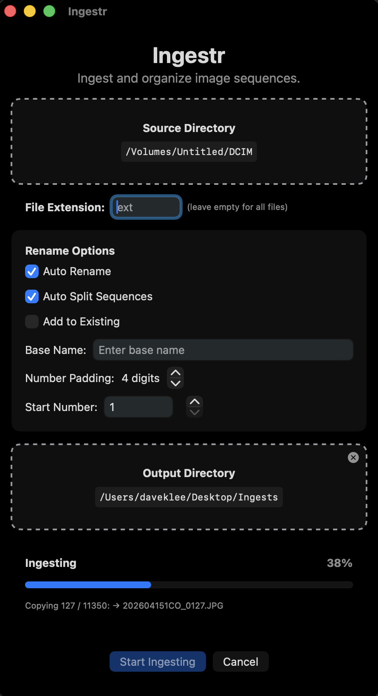
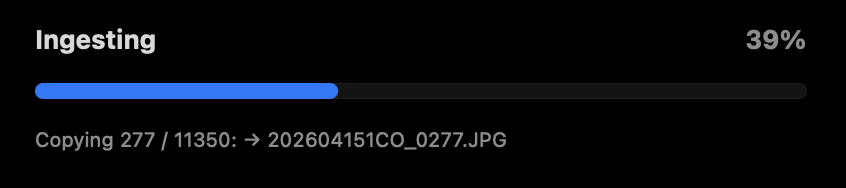

Sequence or photo mode
Sequence mode keeps the classic workflow: detection, auto rename, split, Extras, add to existing. Photo mode skips grouping and writes Year/Month/Day plus yyyy-MM-dd-HHmmss-SSS names from capture time.
Ingestr is a focused macOS app for anyone who shoots hundreds or thousands of stills (time lapse, bursts, or card dumps) and needs them organized fast. Use sequence mode for numbered CO folders and Extras, or photo mode to drop every file into year/month/day folders with a timestamped name—no sequence detection. Copy verification defaults to a full byte-for-byte check after copy; you can switch to size-only or none for speed on huge batches.
Pick a source folder and an output folder, choose how files should be named, and start ingesting. The window stays responsive on large jobs, with a clear progress bar and per-step status while metadata is read and files are copied. Under Rename Options, Copy verification defaults to Full for confidence every file landed correctly; choose None or Size only when you want maximum speed on very large runs.


The app is deliberately simple: pick sequence mode when you want batches grouped by capture time, or photo mode when you only need a dated folder tree and unique timestamp filenames—then spend less time housekeeping and more time editing.
Sequence mode keeps the classic workflow: detection, auto rename, split, Extras, add to existing. Photo mode skips grouping and writes Year/Month/Day plus yyyy-MM-dd-HHmmss-SSS names from capture time.
Groups images that belong together based on capture time, so multi-session card dumps can be split sensibly when you want them to be.
Optional automatic names derived from the date in your files, with a consistent pattern for sequences and camera-original style suffixes.
When auto rename is on, detect large time gaps and start a new sequence—useful when one folder contains more than one shoot. If shots don’t produce a usable cadence (for example identical timestamps), ingest continues sensibly as one sequence.
Very small groups of images are moved to an Extras area so your main sequences stay clean.
Limit processing to one type (for example JPG or RAW) and leave everything else untouched.
Append new shots to a sequence that is already on disk: finds the last number, matches padding, and continues without collisions.
Defaults to full byte-for-byte verification after copy; optional size-only or no verification when you need speed on huge batches. Your choice is saved.
See the step-by-step guide for every option (base name, padding, start number, and the output folder layout).